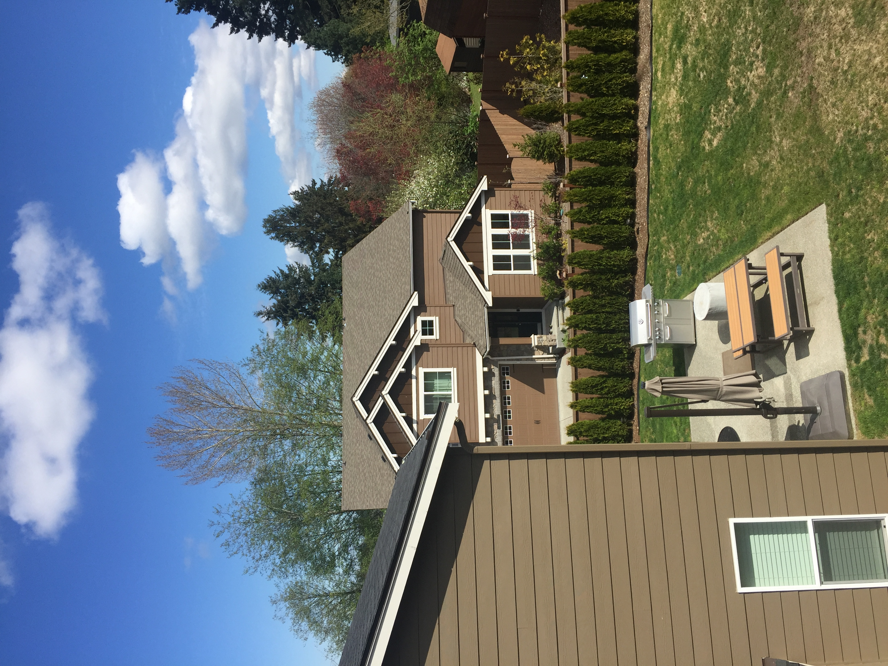

10/31/2021
When you look at a house in the Pacific Northwest, specifically the Bothell/Lynnwood/Aurora neighborhoods, most of them have a recognizable design. I hated it at first. But I have grown to love it. I love it for the freedom.
If you ask a kid to draw a house, they will draw a slatted box with a cross on a window and a simple door; every house here and everywhere is an amalgation of similar details. It is a few large boxes, upwards chevrons, windows. My house is that American house. There is an American house just as there is an American strip mall or an American highway, even beyond their stereotypes. So was my last house in Oregon. Both were new developments. The sidewalks are perfect. The sidewalks are rounded so that the cars can drive onto them. They are what an upwardly mobile middle aged couple who are not too clear about the architecture but wanting something American aspires to own. It is an approximation you can imagine of something I can't even name because I don't know what's really called. There is the barest trace of colonial influence. They are examples of premium mediocrity. The builders are going for something beyond public appeal. Maybe it is far future respectability when the house gets old enough to have an illustrious history.
It might be unaware but adopted a manifestation of the meritocracy America strives to be. It might be argued that way by a defendant to the judge. It might go something like this: it doesn't matter where you come from. The house is not important, only the space it encloses. Many gables and many windows and garage. It doesn't need to have any culture. The culture can be transplanted. The language can be learned. The HOA can invent a name for their neighborhood the same way we invent names for our nonprofits; by collecting our image of culture, and synthesizing it into a pithy statement. In our case: Winesap Grove. You can maximize for practicality. The insides need to provide a comfortable study for playing violin, a room for math, a room for learning chinese. A bedroom (it's for sleeping). It's for sleeping. They are containers for people. They are wooden boxes with a piecemeal wooden terrace or fake stone columns. There's a very wide street trading community for space. They lack the humble grace of a suburban house in Kirkland or Bellevue but often compares in square footage or floor size. My house is three thousand square feet. My last house was the same.
They are all new. Mine was built three years ago. There's been a lot of development where I live. There's something called Northline Village which might be planned for proximity to the lightrail. It might be built by 2026. In the process they will demolish two restaurants, a bank, a best buy outlet that sells washing machines, a furniture store, and a bunch of empty lots. They will build a cinema, a Salt and Straw, a Chipotle, and a series of expensive apartments. These are the awkward first steps towards a hipster coma state until the heat death of the universe.
It's not a distinction between the rich & poor because we are rich. It's a distinction between the cultured and uncultured, one that you become more self aware of the more you become relatively cultured. It's the distinction between an english-speaking household and a bilingual one that speaks English. But it doesn't have to. As a passive environmental factor it doesn't have to do anything.
It frees you to do what you want. You don't need to submit to the dominant culture or stare into the facelessness of the existence your house guarantees. You can create a different culture. In the absence of a neighborly community and an existing set of rules you can create new. I'm not an Italian living in a thousand year old village. I'm not trying to plead my case to mainstream culture as a diversity supplicant. I can make what I want. And people will ignore me out of politeness or respect or apathy. That is the advantage of my house.